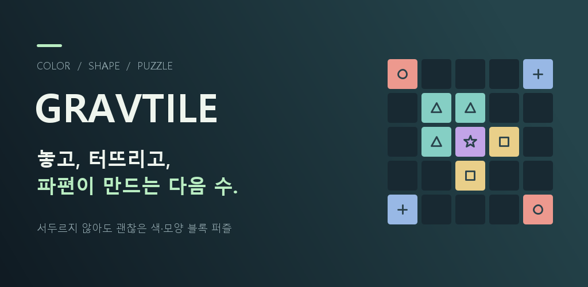

ANDROID · OFFLINE PUZZLE / HIDYGAMES
GRAVTILE
놓고, 터뜨리고, 파편이 만드는 다음 수. 차분한 색·모양 블록 퍼즐입니다.

REAL SCREENSHOTPLACE / MATCH / RECONNECT
같은 색과 기호를 연결하고,
파편으로 다음 수를 만듭니다.
※ 이 페이지의 이미지는 HidyStudio가 제공한 실제 개발 중 스크린샷입니다.
9×9현재 표시된 보드
6표시된 선택지 수
4확인 가능한 모드 화면
01 / CORE LOOP
게임의 흐름
매칭, 파편 이동, 다음 보드 상태 예측을 중심으로 구성된 퍼즐 시스템입니다.
01 / PLACE
배치하고 회전
블록 세트를 골라 빈칸에 배치하고, 필요할 때는 빈칸을 눌러 회전합니다.
02 / MATCH
3개 이상 연결
같은 색·기호의 블록을 3개 이상 연결하면 보드에서 제거됩니다.
03 / FRAGMENTS
파편이 안쪽으로 이동
제거 후 남은 파편은 중앙 쪽으로 이동하며 다음 기회를 만들어 냅니다.
04 / CHAIN
연쇄를 설계
파편이 다시 붙어 한 번 더 터지면 연쇄 파괴와 콤보로 이어집니다.
02 / SCREENSHOTS
실제 게임 화면
현재 안드로이드 빌드 기준 메뉴, 플레이 화면, 도전 모드, 안내 UI를 함께 정리했습니다.


03 / MODES & SYSTEMS
스크린샷으로 보는 모드
현재 화면 기준으로 무한 모드와 여러 도전 규칙 세트를 확인할 수 있습니다.
무한 모드
다음 선택지를 더 이상 놓을 수 없을 때까지 이어 가며 점수를 높이는 기본 모드입니다.
악당 퇴치
막힌 칸과 목표 제거 수가 함께 제시되어 공간 운영을 더 신중하게 요구하는 도전 화면입니다.
코어 교체
중앙 칸을 중심으로 규칙이 작동하는 도전 모드로, 비어 있는 코어를 기준으로 보드를 운영합니다.
연쇄 파괴
재연결과 연속 폭발을 노리는, 콤보 중심의 도전 모드입니다.
출시 상태
GRAVTILE은 현재 Android용으로 개발 중입니다. 이 페이지에는 현재 공유해주신 최신 스크린샷을 반영했으며, 스토어 정보가 확정되면 다운로드 링크를 추가할 수 있습니다.